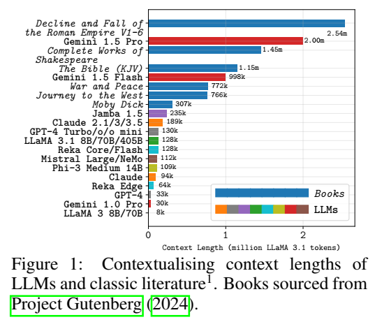
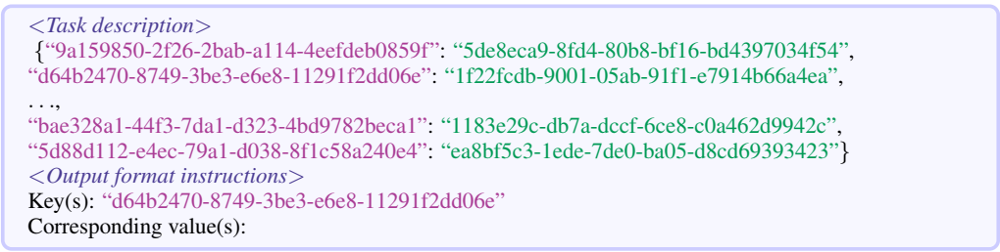
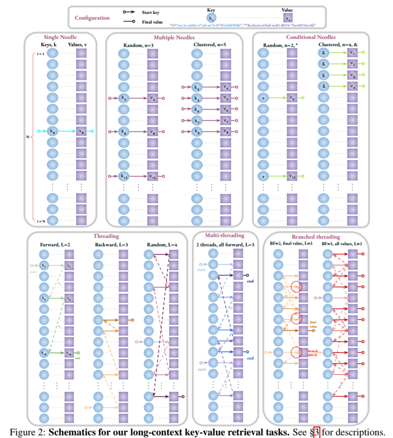
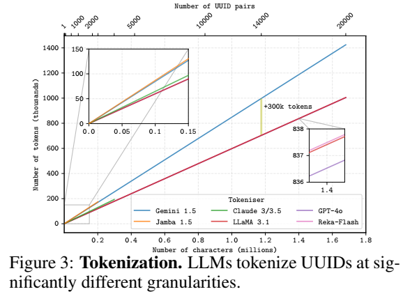
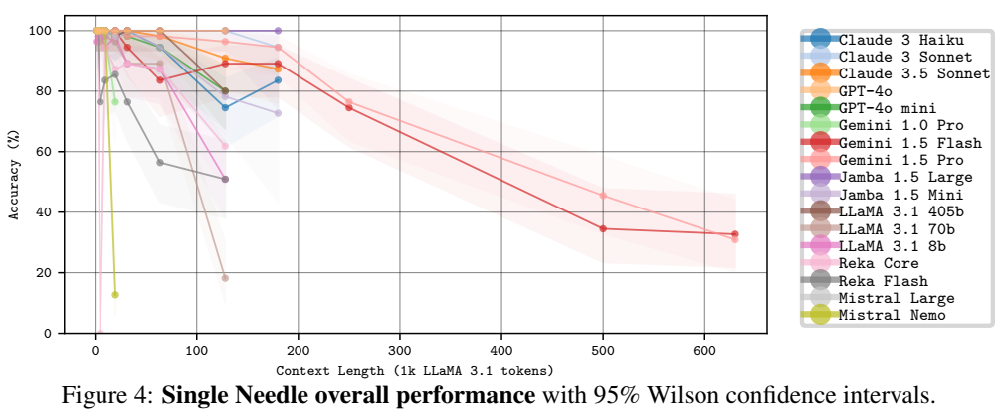
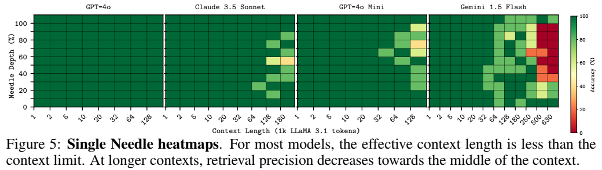

论文阅读十一：穿针引线：LLMs能否穿过近百万规模的干草堆？
摘要
随着大型语言模型（LLM）的上下文限制的增加，可能的应用程序和下游功能的范围也在扩大。在许多现实世界的任务中，决策取决于分散在通常包含无关信息的不同文档集合中的细节。长上下文LLM似乎非常适合这种复杂的信息检索和推理形式，传统上证明这种形式既昂贵又耗时。然而，尽管近年来更长上下文模型的发展取得了快速进展，但我们对LLM如何有效地使用其上下文的理解并没有跟上步伐。为了解决这个问题，我们进行了一系列检索实验，旨在评估17个领先的LLMs的能力，例如它们通过上下文窗口跟踪信息线索的能力。引人注目的是，我们发现许多模型都是非常线程安全的：能够同时跟踪多个线程，而不会显著降低性能。尽管如此，对于许多模型，我们发现有效上下文限制明显短于支持的上下文长度，随着上下文窗口的增长，准确性会降低。我们的研究还强调了一个重要观点，即不应直接比较不同标记器的标记计数——它们通常对应于数量相差很大的书面字符。我们发布了我们的代码和长上下文实验数据。项目地址
引言
近年来，LLM和多模态LLM已被证明在软件工程（Hou等人，2023）、地理空间推理（Roberts等人，2023a；b）、医学（Wu等人，2024）、数学和科学图形理解（Yue等人，2024年）和金融（Liu等人，2023b）等任务中具有显著的能力（Bubeck等人，2023年）。
计算资源的扩展，加上技术创新（Liu等人，2023a），使当代前沿模型能够在不断增加的数据量和更长的上下文限制（它们一次可以处理的最大数量的标记）上进行训练。为了将领先模型可以同时处理的标记数量进行情境化，在30多万个标记1的情况下，经典小说《白鲸记》（Melville，1851）可以几乎5次放入Gemini 1.5 Pro（Reid等人，2024）的2M标记上下文窗口中。如图1所示，大多数书籍甚至书籍系列包含的标记比最长的模型上下文窗口少。

较长的上下文为性能提供了潜在的好处，例如，多样本上下文学习（Agarwal 等人，2024），其中成百上千的示例被添加到模型输入中。另一个后果是可能的应用范围和可实现的下游任务范围更广。特别是，在较长的背景下，模型可以更好地执行现实世界的场景，如法律文件检索、学术研究、理解税收框架以及解决犯罪和谜题。在这些情况下，决策和结论是基于分布在许多来源和格式中的大量信息做出的。在文本中保存信息的能力——相当于多部长篇小说或数百篇学术论文和文件——使模型非常适合这类任务。
长上下文模型的发展速度超过了人们对它们如何使用长上下文以及如何驾驭它的理解。此外，目前的基准被认为不足和缺乏（Bai等人，2023；Zhang等人，2024）。具体而言，我们确定了现存文献在长期语境理解方面的三个局限性。（1） 性能饱和：基于“大海捞针”测试（Kamradt，2023），许多基准测试侧重于简单的基于检索的实验。前沿模型可以出色地执行这些任务，获得完美或接近完美的分数（Reid等人，2024；Anthropic，2024a；Dubey等人，2024），几乎没有空间和有用的见解可以获得。（2） 有限的上下文长度：在大多数长上下文基准中，评估仅限于10万以下的上下文，与前沿LLM的上下文限制相差一个数量级。（3） 缺乏细粒度的结论：由于在大多数作品中使用真实文档或倾向于将多个任务聚合到一个整体指标中，除了随着上下文长度的增加而性能下降的宏观趋势外，隔离特定趋势是具有挑战性的。
因此，有机会进行一系列具有挑战性的实验，以达到前沿模型的极限。为此，我们设计并进行了一系列不同难度的基于检索的长上下文实验，涉及高达900k（Gemini 1.5）个标记的上下文大小。我们的调查包括新的针刺任务，这需要在上下文的不同部分跟踪一系列相互关联的信息，并检索最终值。我们还探索了一种更困难的多线程变体，它需要同时跟踪多个线程，并评估LLM是否是线程安全的。我们评估了一组17个LLM在这些任务上的表现，并观察到在更长的时间内表现有所下降。结合模型之间标记化差异显著的发现，我们引入了一个特定于任务的有效上下文限制度量。
总之，我们的核心贡献是：（1）我们介绍了具有挑战性的多步线程和多线程检索任务，并评估了17个领先的LLM在这些任务上的表现。（2） 对于简单的针检索任务，我们发现增加上下文长度会降低检索性能，而增加并发检索的针数对更强模型的影响相对有限。（3） 我们发现，许多领先的LLM都是非常线程安全的——它们的线程跟踪性能在很大程度上不受并发查询的影响。（4） 我们对标记化器进行了比较，突出了标记计数的显著差异。（5） 我们提出了一种特定于任务且可配置的模型无关的有效上下文限制度量。
相关工作
评估大型语言模型的长上下文能力是一个新兴的研究领域。大量工作侧重于评估LLMs长文档理解任务，如问答（An等，2023；Bail等，2023；Dong等，2023；Kuratov等，2024；Shaham等，2023；Li等，2023；Yuan等，2024），发现性能一般随着上下文长度的增加而下降。相关任务包括总结和引用跨文档的见解（Laban等人，2024）和索赔验证（Karpinska等人，2024），这对前沿模型来说是具有挑战性的。虽然这些基准在各种任务中提供了强有力的评估，但它们通常侧重于较小的上下文长度，其中大多数只包括超过10万的有限探索。虽然使用真实文档执行这些任务对现实有好处，但也有缺点。具体来说，需要及时的注释和管理，这使得很难将性能分解为上下文深度和长度等变量的函数。
其他工作侧重于更抽象的检索任务（例如，Kamradt（2023）），以牺牲现实世界的相关性为代价，允许更清晰的提取。刘等人（2024）的一项有影响力的工作经验表明，相关信息在LLM背景下的位置会显著影响绩效，当信息处于背景的开始或结束时，绩效最佳。在后续的一些研究中也报道了类似的行为（Xu等人，2023；An等人，2024；董等，2023；谢等，2024b；Laban等人，2024）（在某些情况下（Levy等人，2024）），但其他人未能复制这些发现（Zhang等人，2024.；Song等人，2024.）。Song等人（2024）引入了一种检索范式，涉及在整个上下文窗口中积累信息，以及一种更具挑战性的变体，其中包括误导性信息。尽管揭示了有趣的行为，但前沿模型在这些任务上的空间有限。最近的一些相关工作包括更具挑战性的检索实验，涉及多个步骤。一个例子是祖先追踪挑战（Li等人，2024），它被证明具有挑战性，但被评估为相对适中的上下文长度（最多2k个令牌）。另一个例子是变量跟踪（Hsieh等人，2024a），然而，这些任务的结果被纳入更广泛的实验中，而不是单独进行详细分析。我们将困难的针刺任务评估到高达630k令牌的上下文长度，并全面消融和分解结果。
任务
从先前的工作中获得灵感（Liu等人，2024；Hsieh等人，2024a；Zhang等，2024），我们将实验重点放在包含合成生成数据的抽象任务上。通过使用合成数据，（1）我们避免了潜在的昂贵的问答整理和注释，（2）我们可以确保我们的数据是高质量和无噪声的，（3）我们可以对序列长度和其他任务参数进行细粒度控制，从而直接影响难度。抽象设置几乎消除了所有的自然语言语义，约束了实验变量，并使见解的推导与上下文窗口的参数更紧密地联系在一起。
我们在所有实验中都使用包含随机UUID键值对的字符串序列化JSON对象。每个UUID都是一个唯一的32个字符、128位值字符串。用于每个任务的提示遵循以下一般结构：

在接下来的小节中，我们将概述我们的长期上下文理解任务。为了补充文本描述，我们还包括图2中每个任务的示意图。我们在一组不同序列长度m的“干草堆”上进行每个实验，其中每个干草堆（H）是一组键值对：H={（Ki，Vi）|i∈{1,2,3，…m}}。
单针
在这个简单的激励任务中，目标是为单个指定键（Ki）提供相应的值（Vi）。对于每个干草堆，我们将针放置在一组固定的放置深度。
多针
在前一个任务的基础上，此任务的目标是为2到25个键之间的指定集合提供所有相应的值。我们使用两种不同的放置方法重复该任务：（1）随机-密钥被随机采样（不替换）。（2） 聚集-在随机采样初始密钥后，所有后续密钥都是相邻采样的（这是由于观察到给定查询的信息线索在现实世界的应用程序中经常聚集在一起）。
条件针
是多针任务的扩展，其目标不是提供特定的键，而是检索与符合指定条件的所有键对应的值。在这种情况下，我们通过用特殊字符（如“*”或“&”）替换随机选择的字符来修改目标键。预期值是与包含特殊字符的键对应的值。
线程
我们通过最初从H中选择n个索引j={j1，j2，…，jn}的子集来定义线程任务，其中jk∈{1，2，…，m}。然后，我们迭代k>1的索引j，替换为H，Kjk←Vjk-1，形成一条线。给定一个开始键（Kj1），最终目标是找到线程末尾的值（Vjn）。我们评估了n=25步以内的线程长度，并对不同的线程方向进行了实验：（i）正向-线程中每个后续对的位置在H中稍后出现（即j1<j2<…<jn），（ii）反向-后续对的地址在H中较早出现（即j1>j2>…>jn）和（iii）随机-线程中的每个后续对可以在H中的任何可用位置出现，而不管方向如何。
多线程
对于此任务，我们修改H以包含多个线程。目标是确定每个线程的最终值，只给出起始键。我们尝试了不同的螺纹长度和螺纹数量的组合，并研究了螺纹方向的影响。
分支线程
我们提出了线程任务的最终变体，在该变体中，我们为线程中的每个链接添加分支。在这种情况下，在线程中的每个索引处（第一个键除外），我们修改2个或多个键（基于指定分支因子b的数字），使其等于前面的值之一。在每一步中，都有b个可能的延续，其中只有一个延续。总体目标是确定最长线程的最终值。

实验
基线。为了全面描述当前前沿长上下文模型的能力，我们在具有挑战性的长上下文检索实验中评估了一组17个LLM。由于大多数前沿长上下文模型都是闭源的，我们将评估集中在闭源基线上。然而，我们也评估了开源模型的一个子集作为比较。在可能的情况下，我们专注于每种LLM的聊天或指令调优变体，因为它们更倾向于遵循指令，这使得任务范围更广，并简化了自动评估。具体而言，我们评估了来自闭源GPT-4（OpenAI，2023；2024a）、Gemini 1.0（Gemini Team等人，2023）和1.5（Reid等人，2024）、Claude 3（Anthropic，2024a）和3.5（Anthropic，2024b）以及Reka（Ormazabal等人，2024b”系列的模型，以及开源Jamba 1.5（Team等人，2024a”）、Mistral（AI，2024a“）和LLaMA 3.1（Dubey等人，2024c”）模型系列的模型。每个模型的报告上下文长度如图1所示。
提示。在整个实验过程中，我们使用了一种简单的提示策略，该策略由一个基本的用户提示组成，其中包含每个任务的问题和输出格式说明。根据先前的工作（Roberts等人，2024a；b；OpenAI，2024c），我们不会修改系统提示或为每个模型定制提示。除了提供所需输出格式的示例外，我们不使用少数镜头示例或明确鼓励推理。我们在附录中列出了每个任务中使用的具体提示。
推理。所有推论都是在零样本设置下进行的。为了提高可重复性，我们设置了模型超参数，以鼓励尽可能确定性的生成。具体来说，我们使用贪婪搜索解码策略，其中在每一步从模型词汇表V中选择最可能的标记，条件是前面的标记，即wn+1=arg maxw∈V P（w|w1，w2，…，wn）。我们通过指定随机种子并将温度参数设置为零来实现这一点。我们通过VertexAI（谷歌，2024）{Gemini、Claude、Jamba、LLaMA 3.1和Mistral}、OpenAI（OpenAI，2024b）{GPT}和Reka（AI，2024b，{Reka}API评估LLM。我们的目标是尽可能接近其上下文限制来评估每个模型，然而，由于API的限制，这并不总是可行的，有关更多详细信息，请参阅附录。
评价。根据最近的工作（Roberts等人，2024b），我们使用强LLM（Gemini 1.5 Flash）将评估的LLM的输出解析为特定格式，然后通过与预期答案的精确匹配进行评估。由于大多数模型表现出很强的输出跟踪能力，因此这种基于LLM的重新格式化和评估已被证明与Roberts等人，2024a中的其他评估指标密切相关。对于大多数模型，这只对需要多个值作为答案的任务是必要的。对于需要k个值作为答案的任务，我们只评估模型提供的前k个答案，忽略任何其他额外的答案。
标记化。上下文限制通常以令牌的形式报告，并对模型进行比较，就像这是一个一致的、与模型无关的度量一样。然而，尽管令牌化方案在令牌化器之间可能存在微小差异，但我们的初步实验揭示了显著差异，如图3所示。UUID对由GPT-4o表示的∼50个令牌表示，而Gemini 1.5使用75个令牌表示。在较长的上下文中，这种差异是显著的：Gemini 1.5 Flash报告的1M令牌的上下文限制相当于∼700k GPT-4o令牌。本节中提到的令牌计数是指使用LLaMA 3.1标记器标记的文本。

在以下小节中，我们报告了第3节中概述的任务的结果。实验在12个不同大小的干草堆上进行，范围从1k到630k代币（以LLaMA 3.1代币衡量）。对于大多数模型，我们在5组不同的干草堆上重复每个实验，并报告平均性能，但在某些情况下，由于速率限制，只有1次重复是可行的。更多细节和结果见附录。
单针
作为一项激励任务，我们评估了模型在干草堆中以10%的增量准确检索与固定深度的键对应的值的能力。我们在图4中显示了该任务的整体深度平均模型性能，在图5中显示了模型子集的热图。在较短的上下文中，模型很好地执行了这个简单的任务。然而，在大多数情况下，检索精度会随着上下文长度的增加而降低。这表明，虽然模型可以对输入进行推理，直到达到其上下文限制，但大多数模型都有一个较小的“有效”上下文限制，可以从中准确提取信息。值得注意的例外是GPT-4o和Jamba-1.5 Large，它们在整个过程中都取得了满分。从热图中可以明显看出，对于大多数模型，准确性随着上下文的深入而降低，这支持了刘等人（2024）的研究结果。


结论
我们介绍了一组检索实验，覆盖简单的单针检索，较困难的多针和条件针检索，并且最终，具有挑战性的针线程和多线程检索。